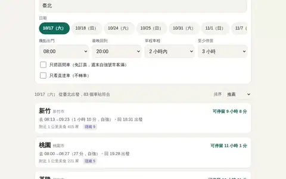
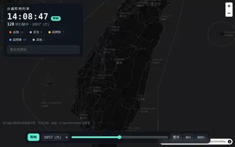
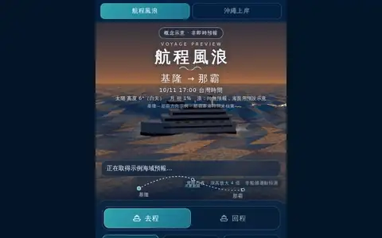
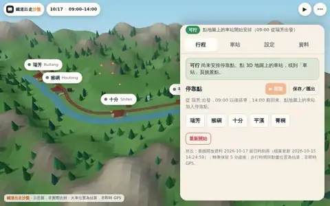
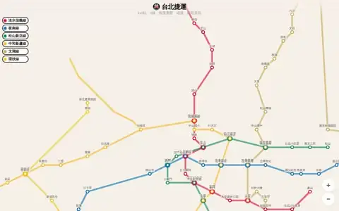
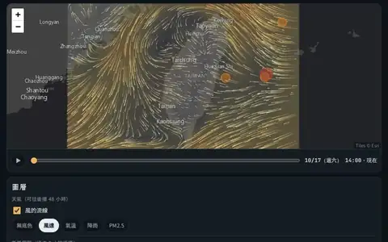
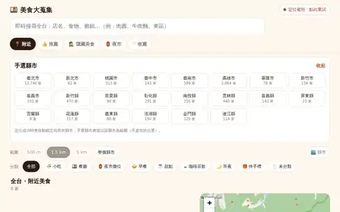
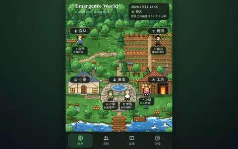
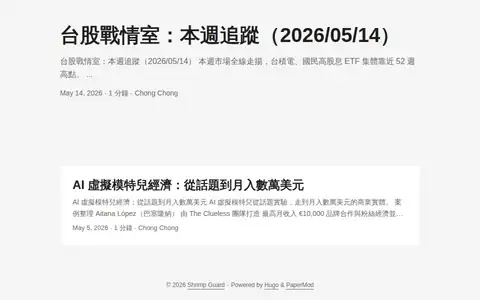

週末出走
選出發站和週末日期，找出停得夠久、附近有得吃的台鐵車站，排好去回程班次（含轉乘一次）與美食。
運作中・時刻表到 12/13
所有作品依主題分類，每張卡片標出目前狀態。「需要登入」的作品沿用網站原有帳號；「僅擁有者 ChatGPT 帳號」為私人預覽，訪客無法開啟。

選出發站和週末日期，找出停得夠久、附近有得吃的台鐵車站，排好去回程班次（含轉乘一次）與美食。
運作中・時刻表到 12/13

依台鐵公開時刻表推算全台每一班列車此刻的位置，沿真實軌道移動；點列車看停靠站，點車站看發車，可回放任一天。不含誤點。
運作中・資料到 12/14

基隆—那霸示例航程：真實日夜與預報風浪的海面。
運作中
依目前位置排序那霸景點與美食，附導航。
運作中

平溪線半日鐵道旅行 3D 規劃。
運作中・時刻表每日自動更新

台北捷運路線與站點圖。
可瀏覽

一個頁面看台灣上空的一切：風的流線、氣溫、降雨、PM2.5 與 48 小時預報，衛星雲圖、地震、火燒雲／觀星／雲海景點預報疊在同一張地圖；另有星空（星官與二十八宿、太空站過境）、天象曆、立體光影、天氣聲音分頁。
運作中・整合 8 個工具
開源作品（MIT）：寫實 3D 地球，即時航班、船隻、衛星、火箭發射、地震與颱風。建議用電腦開。
運作中・未加 API key（3D 建築、語音 AI 不開放）

全台 20,615 家店：即時搜尋、推薦、隱藏美食、夜市入口。
運作中・每月自動更新
台股 ETF 持股、配息現金流、目標與研究紀錄。
正式版運作中
四檔持股變成四間店：成交金額影響人潮，法人買賣成為門口隊伍。收盤資料示意動畫。
運作中
Bybit 紙上交易帳本與 AI 決策紀錄（不下真單）。
V1 紙上帳本運作中・V2 300U 已停止
雲端遷移測試，使用測試資料，不是正式個人資料。
測試中

五位居民的持續運行小世界。
公開預覽
原創手機港町探索遊戲，三種結局，可重新遊玩。目前僅限擁有者開啟。
可玩測試版・私人存取
AI 經營的科技公司模擬，一天等於遊戲一個月。
開發中・尚無可用預覽
主機磁碟、記憶體、服務、排程、容器，以及一鍵檢查所有作品網址。
運作中

AI 應用趨勢與台股觀察文章。
可瀏覽
手機王國遊戲（建設村莊、發布懸賞、英雄自行出任務）。
暫停・素材成果保留
原入口保留中。
保留中
曾規劃的 GitHub Pages 公開版本。
暫停・正式版在美食大蒐集
生活角色實驗，網址已由 LIFE COMPASS 接手。
已退役
多模型社群與 AI 生活世界實驗。
已退役
300 USDT 雙向持倉紙上帳本。
已停止・紀錄可在 Fund Manager 查看